龙 纹
龙纹，是青铜器经典纹饰之一，又称为“夔（kui）纹”或“夔龙纹”。龙是古代神州传说中的动物，以鼻为中线，两旁置目，体躯向两侧延伸，若以其侧面作图像，则成一长体躯与一爪。古人认为它是最高的祥瑞，在中国古纹样装饰中，被大量装饰在玉石、牙骨、陶瓷、织绣和服饰、景观等许多方面。在封建时代，又将它与佛教、道教的神话结合起来，赋予新的高级神秘色彩，特别是在宫廷艺术中，龙的装饰物样式繁多。 根据龙纹的结体大致可分为爬行龙纹、卷龙纹、交龙纹、两头龙纹和双体龙纹等。在青铜器上，凡出现为一爪的纹饰，就被称为“夔纹”或“夔龙纹”。殷商时期龙身呈璜状，玦形或璧形，还有圆雕的龙，圆雕龙前足着地，长尾盘卷。